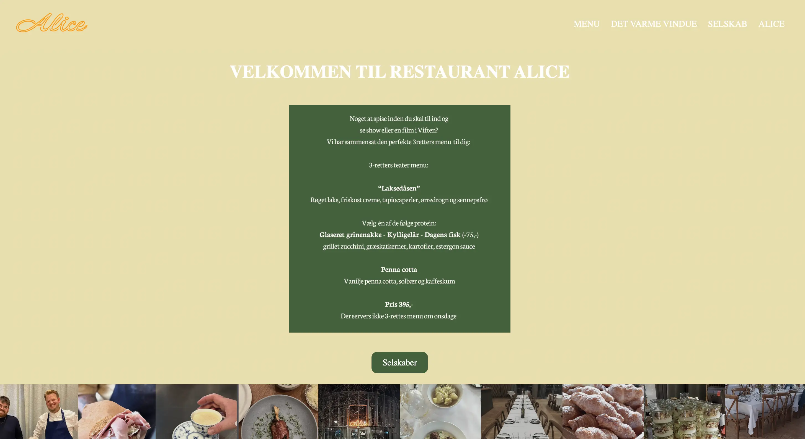
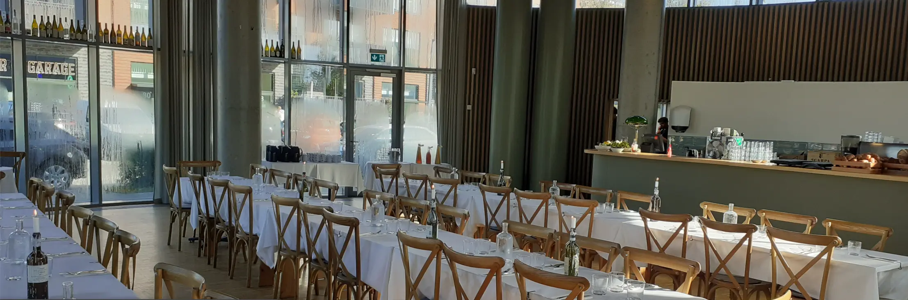
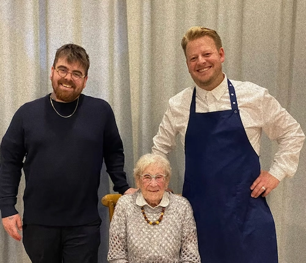

TEMA 05 Se projekt
  Alice
I dette tema skifter fokus fra egne projekter til løsningen af en konkret forretningsmæssig udfordring gennem strategisk indholdsproduktion. Formålet er at skabe en sammenhængende digital fortælling, der både teknisk og visuelt taler direkte til en specifik målgruppe.
Læring
Arbejdet med Restaurant Alice har givet mig værdifuld erfaring med både det tekniske og det menneskelige aspekt af et udviklingsprojekt
Jeg har lært, at det både er sjovt og udfordrende at arbejde i en gruppe. Det har været motiverende at have nogen at sparre med, men det har også krævet god kommunikation og kompromisvilje at få alle vores idéer til at smelte sammen.
Vi har gennem projektet brugt Git og GitHub til at synkronisere vores arbejde. Det har været udfordrende at undgå "merge conflicts", men det har givet mig en vigtig rutine i at arbejde professionelt med kode i et team.
Derudover har jeg lært forskellen på at uploade en tung fil direkte til sin kode eller at bruge YouTube til at "streame" den, så hjemmesiden indlæser hurtigere.
Proces
I redesignet af hjemmesiden for Restaurant Alice har jeg arbejdet som en del af en gruppe for at skabe et sammenhængende digitalt univers. Processen har været præget af et tæt samarbejde om at forene vores kreative idéer til én visuel identitet. Derudover har vi i fællesskab fastlagt en visuel retning baseret på en beige og mørkegrøn farvepalette. Det var en spændende proces at sparre med hinanden om, hvordan vi bedst kunne formidle restaurantens organiske og professionelle look.
Løsning
Løsningen for Restaurant Alice er et responsivt redesign, der bruger en moderne, men hyggelig farvepalette bestående af beige og mørkegrøn. Beige fungerer som den primære baggrundsfarve for at give et roligt og "clean" udtryk. Mørkegrøn bruges som kontrastfarve til overskrifter og knapper for at skabe en naturlig og professionel stemning.
Som en central del af løsningen har gruppen brugt Git og GitHub til at styre koden. Selvom det var udfordrende at få forskellige kodestilarter til at spille sammen, har løsningen været løbende kommunikation og fælles fejlfinding, hvilket gjorde processen både lærerig og sjov.
Hindbær videoen
I dette forløb har jeg fået en dybere forståelse for, hvordan man planlægger og producerer videoindhold, der ikke bare ser godt ud, men også fortæller en historie
Vi har lært, at lys, afstand og komposition er afgørende for at forme en stemning og påvirke seerens følelser. Jeg har arbejdet med at fastlægge en visuel stil (varm/kold, lys/mørk), som guider både optagelserne og den efterfølgende redigering.
For at sikre struktur og tempo i videoen har jeg lært at bruge en shotlist-skabelon, hvor hvert shot beskrives med type, lyd og lys. Dette gør optagelserne mere målrettede og effektive.
Jeg har fået kendskab til "5-shot sequence"-metoden, som sikrer variation og kontekst. Det inkluderer alt fra wide shots for overblik til close-ups for detaljer og reaction shots for at skabe nærvær.
En vigtig læring har været lyden betydning for realismen. Vi har arbejdet med både ambience (miljølyd) og handling-lyd, og lært vigtigheden af at optage lyd tæt på kilden.
Resultatet blev en kort, stemningsfuld video, hvor den tekniske planlægning sikrede en klar rød tråd. Ved at bruge '5-shot sequence' og en målrettet shotlist skabte vi en visuel variation, der gør fortællingen levende på kort tid.